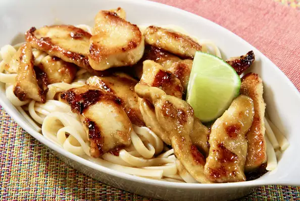

Honey Lime Chicken

Description
An easy weeknight dinner for honey-lime chicken with ingredients most
people have on hand.
Ingredients
10 Oz Boneless Chicken Breast
Steps
Combine flour and cayenne pepper in a large resealable plastic bag. Add a
few chicken strips at a time and shake to coat.
Melt butter in a large, nonstick skillet over medium heat. Add chicken and
cook until browned on all sides, 4 to 6 minutes.
Combine lime juice, honey, brown sugar, and Worcestershire sauce in a
bowl; pour over the chicken. Continue to cook until juices run clear and
the sauce is thickened, 3 to 5 more minutes.